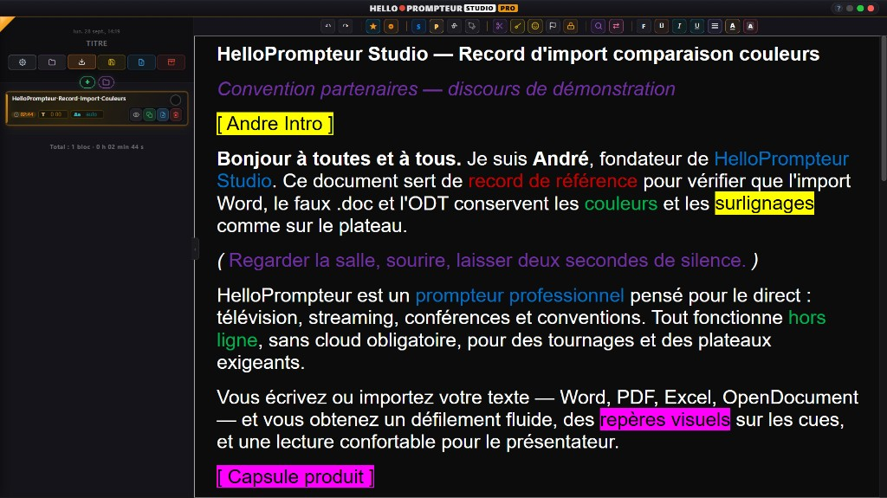
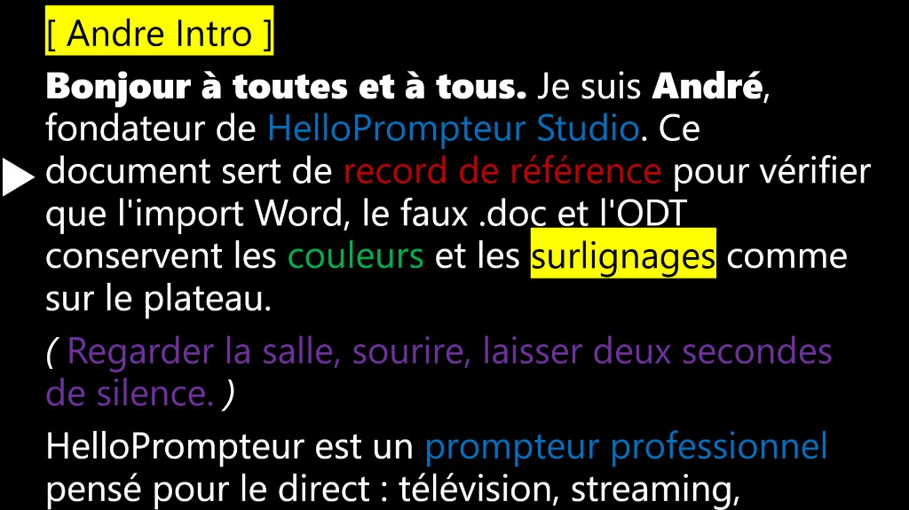
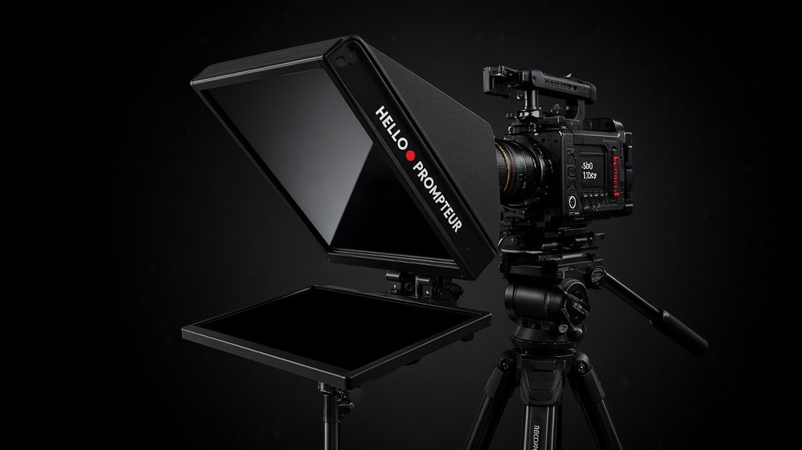
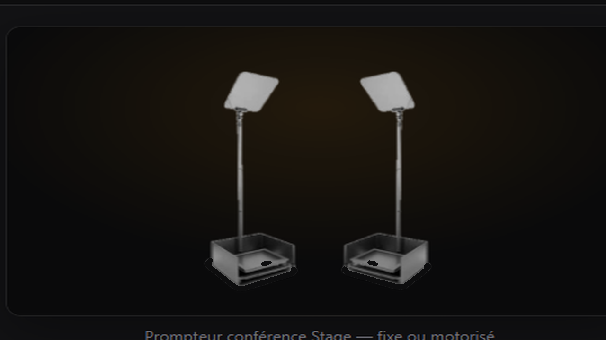
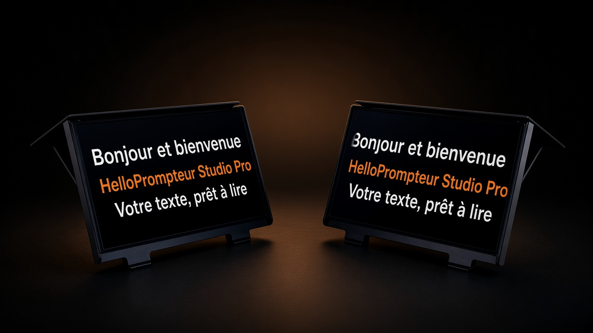

1
Propriétaire
On le développe. On le maîtrise. Personne d’autre n’a le même outil sur votre show.
Nous avons créé notre propre outil pour viser le meilleur logiciel du marché — celui qui répond enfin aux vrais problèmes des prompteurs « pro » classiques, trop lents et trop limités. HelloPrompteur Studio Pro est utilisé au quotidien par nos équipes pour vos plateaux. Face à Autocue Explorer, Autocue Pioneer, QPro, Autoscript WinPlus IP : on écrase sur l’import, l’édition, la mise en page et le last minute. C’est pour ça qu’on est les meilleurs.

Texte riche, couleurs et cues — ce que nos équipes importent et lisent sur plateau
Les prestataires classiques travaillent avec les mêmes outils du marché : Autocue Explorer, Autocue Pioneer, QPro, Autoscript WinPlus IP… lents, figés, peu adaptables. Nous avons conçu et on utilise notre propre logiciel — HelloPrompteur Studio Pro — pour que nos équipes soient jusqu’à 90 % plus efficaces sur la prep et le live. Quand vous nous confiez un plateau, vous bénéficiez de cet avantage. Pas un catalogue logiciel : une équipe mieux armée.
On le développe. On le maîtrise. Personne d’autre n’a le même outil sur votre show.
Nos équipes s’en servent tous les jours pour vos clients — pas une démo marketing.
Vous ne « achetez » pas un soft. Vous gagnez une régie plus rapide, plus sûre, plus réactive.
Quatre preuves concrètes — là où les autres équipes perdent du temps, nous on avance.
Import
Word, PDF, Excel… nos équipes reçoivent un texte propre, sans usine à reformater.
Édition
Couper, colorer, nettoyer, découper — en minutes. Les autres : en heures.
1 clic
Phrases aérées, blocs, runorder — le texte devient lisible tout de suite.
Live
Le script bouge ? Nos équipes suivent. Pas de panique, pas de retard antenne.
Ce que nos opérateurs font vraiment — et pourquoi ça écrase le marché.
Fichier client reçu → mise en page fidèle. Moins de retouches = plus de temps pour le fond.
Point + espace → phrases prêtes pour l’orateur. Chez les autres : tout à la main.
Un script long devient un conducteur clair. On réordonne, on saute, on gère l’émission.
Nouveau paragraphe, coupe, correction : on modifie sur place. Le live ne s’arrête pas.
Repères orateur en une touche. Nettoyage express des textes « sales ».
Prep et lecture dans le même outil. Zéro usine entre l’édition et l’antenne.
C’est le logiciel qu’on a conçu pour être imbattable sur la prep — et qu’on met entre vos mains.
Outil interne — force de la maison
Un texte propre, aéré, prêt à lire — livré plus vite que chez n’importe quel concurrent équipé d’un autre logiciel PRO.

Ce que lit votre présentateur
Logiciel et hardware. Nous concevons nos propres prompteurs : caméra, Steadicam, Ronin, scène conférence et plasma. Plus légers, plus compacts, plus simples à monter — pour un plateau propre et rapide.
La plupart des régies louent du matériel générique et bricolent ensuite. Nous fabriquons nos prompteurs pour qu’ils collent à notre façon de travailler : montage express, usage sans câble possible, et lisibilité maximale pour l’orateur.
Conçu pour les axes mobiles : caméra épaule, Steadicam et gimbal type Ronin. Le boîtier est pensé pour rester discret, stable et prêt en quelques secondes.

Prompteur studio — conception maison, écran éteint
Le classique des grandes scènes et discours présidentiels : deux vitres discrètes face à l’orateur, texte invisible pour le public, confort de lecture maximal pour le conférencier.

Prompteur conférence Stage — fixe ou motorisé
Écrans au pied de scène pour les artistes, présentateurs et comédiens qui doivent lire tout en gardant le contact avec le public. Idéal quand un prompteur « vitre » n’est pas adapté au décor.

Retours scène — écrans au pied de plateau
On conçoit et on fait évoluer le hardware comme le logiciel — pour coller au métier.
Plug & play rods, options sans câble : moins de câbles, moins de panne, plus de temps antenne.
Mobile (caméra / Steadicam / Ronin), conférence Obama, et plasma scène — un seul interlocuteur.
Même métier. Eux : un autre logiciel PRO du marché. Nous : HelloPrompteur Studio Pro, outil propriétaire. Jusqu’à 90 % plus efficaces sur la prep et l’édition.
| Capacité édition / prep | Nos équipes (HelloPrompteur Studio Pro) | Autre logiciel PRO |
|---|---|---|
| Import de texte ultra fidèle | Oui — prêt à travailler tout de suite | Non comparable — import cassé / à reformater |
| Édition / changements ultra rapides | Oui — last minute sans panique | Lent — chaque change = perte de temps |
| Mise en page instantanée | Oui — 1 clic, phrases prêtes | Inexistant — tout à la main |
| Découpe blocs / runorder | Oui — 1 clic, dossiers, durées | Lourd — usine à gaz / souvent à la main |
| Couleurs / surlignage flash | Oui — touches rapides | Galère — coloration lente ou peu pratique |
| Nettoyage texte express | Oui — 30 secondes | Très long — manuel pénible |
| Marqueurs + sauts | Oui — instantané | Peu fluide — absent ou gadget |
| Outil adaptable au plateau | Le nôtre — on l’évolue | Figé — peu adaptable |
| Efficacité globale | Jusqu’à ~90 % plus efficaces | Référence basse — heures perdues |
| Temps « texte reçu → prêt antenne » | Quelques minutes | Beaucoup plus long |
Nos équipes, avec notre outil propriétaire, sont jusqu’à 90 % plus efficaces que des équipes équipées d’un autre logiciel PRO.
Autre avantage d’être propriétaire : on ajoute régulièrement des fonctions pour répondre aux besoins réels de vos plateaux. Un besoin particulier ? On l’intègre. Les autres disent non, ou restent bloqués avec un logiciel figé depuis des années.
On écoute le plateau. On adapte notre outil. Pas un « c’est comme ça ».
Le logiciel avance avec nos shows — donc avec les vôtres.
Autocue Explorer, Autocue Pioneer, QPro, Autoscript WinPlus IP : peu adaptables. Nous : on maîtrise le code et le métier.
Réponses client — on ne vend pas le logiciel, on vend le résultat.
Nos équipes absorbent. Import fidèle + édition flash. Pas d’après-midi perdu à reformater.
Oui. On suit. C’est exactement pour ça qu’on a conçu l’outil en interne.
Parce qu’elles travaillent avec les mêmes outils lents que tout le monde. Nous, on a le nôtre — et on est jusqu’à 90 % plus efficaces.
Oui. C’est notre outil propriétaire — créé pour surpasser les softs du marché. Vous l’acquérez, nos équipes le maîtrisent déjà sur plateau.
On ajoute des fonctions souvent. Votre problématique peut devenir une amélioration de notre outil.
Vous ne choisissez pas un soft. Vous choisissez l’équipe la mieux armée du marché.
HelloPrompteur Studio Pro = le logiciel que nous avons créé pour être les meilleurs. Jusqu’à 90 % plus efficaces — pour vos shows, et pour ceux qui veulent le même outil.
PDF : Chrome / Edge → Ctrl+P → Enregistrer au format PDF.